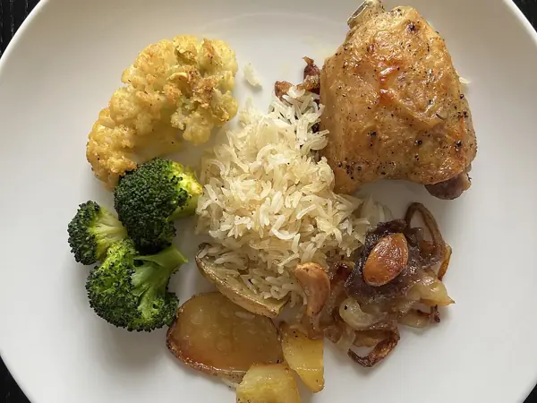

Фото: HaJunkiyada, CC BY-SA 4.0

Индейка на пару с овощами
Филе индейки с брокколи, морковью и кабачком на пару
35 мин2 порц.292 ккал на порциюБ 50 · Ж 4 · У 14Интернациональная кухня
Продукты на 2 порц.
- Филе индейки400 г
- Брокколи200 г
- Морковь1 шт
- Кабачок0,5 шт
- Соль0,7 ч. л.
- Перец чёрный молотый1 щеп.
- Сушёные травы2 щеп.
- Оливковое масло по желанию2 ч. л.
- Лимон по желаниюпо вкусу
Как готовить
- Нарежьте индейку полосками толщиной 1,5 см, посолите, поперчите и посыпьте травами.
- Морковь нарежьте кружками, кабачок полукружьями, брокколи разберите на соцветия.
- Выложите индейку и морковь в пароварку и готовьте 10 минут на среднем огне.
- Добавьте брокколи и кабачок и готовьте ещё 10-12 минут, пока мясо не станет белым внутри, а овощи мягкими, но яркими.
- Перед подачей сбрызните оливковым маслом и лимонным соком.
Совет. Морковь готовится дольше всего, поэтому её кладут сразу с мясом. Брокколи после 12 минут теряет цвет и становится кашей.